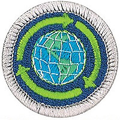

Sustainability - In-Person Class Notes
Please arrive with ample time prior to the start time of your class for registration. Remember, there will be others checking in as well that registration may take a little time, depending on the size of the class and the event held in conjunction with the class.
Your Scout uniform is required to be worn when attending this merit badge session. If you have any additional questions, please feel free to contact Brian Reiners (Scoutmater Bucky) via email at scoutmasterbucky@yahoo.com or on the phone at 612-483-0665.
Reviewing the merit badge pamphlet PRIOR to attending and doing preparation work will ensure that Scouts get the most out of these class opportunities. The merit badge pamphlet is a wealth of information that can make earning a merit badge a lot easier. It contains many of the answers and solutions needed or can at least provide direction as to where one can find the answers.
It is NOT acceptable to come unprepared to a Scoutmaster Bucky event. You can (and should) use the Scoutmaster Bucky Sustainability Merit Badge Workbook to help get a head start and organize your preparation work. Please note that the use of any workbook is merely for note taking and reference. Completion of any merit badge workbook does not warrant, guarantee, or confirm a Scout's completion of any merit badge requirements.
It should be noted that this merit badge class is not meant for those who just want to come and see what they can get done. It is possible to complete this merit badge by being properly prepared and having done the preparation work prior to the class. Preparation is a MUST! If you are not willing to participate to these expectations and standards, perhaps the Scoutmaster Bucky opportunity is not for you.
Things to remember to bring for this merit badge class:
- Merit badge blue card properly filled out and signed off by your Scoutmaster
- Sustainability Merit Badge Pamphlet
- Scout uniform
- Supporting documentation or project work pertinent to the Sustainability merit badge, which may also include a merit badge workbook for reference with notes
- A positive Scouting focus and attitude
Please read and understand the Scoutmaster Bucky Blue Card Process.
Sustainability - Online Class Notes
Please arrive with ample time prior to the start time of your class to ensure your connection to the online session is working properly. Ask people in your household to refrain from unnecessary internet usage, including but not limited to: streaming videos, online gaming, and other heavy bandwidth usage.
You will receive a link 12 to 24 hours before the class start time. Notification will come through the email address provided during the registration process, so please make sure you enter your email correctly.
Your Scout Uniform is required to be worn when attending this Online Merit Badge session. If you have any additional questions, please feel free to contact Brian Reiners; Scoutmaster Bucky via email at scoutmasterbucky@yahoo.com or on the phone at 612-483-0665.
Reviewing the Merit Badge Pamphlet PRIOR to attending and doing preparation work will insure that Scouts get the most out of these online class opportunities. The Merit Badge Pamphlet is a wealth of information that can make earning a Merit Badge a lot easier. It contains many of the answers and solutions needed or can at least provide direction as to where one can find the answers.
It is NOT acceptable to come unprepared to a Scoutmaster Bucky event. You can (and should) use the Scoutmaster Bucky American Business Merit Badge Workbook to help get a head start and organize your preparation work. Please note that the use of any workbook is merely for note taking and reference. Completion of any Merit Badge Workbook does not warrant, guarantee, or confirm a Scouts completion of any merit badge requirement(s). You can download the Scoutmaster Bucky Sustainability Merit Badge Workbook for taking notes to help you prepare.
It should be noted that this Merit Badge class is not meant for those who just want to come and see what they can get done. It is possible to complete this Merit Badge by being properly prepared and having done the preparation work prior to the class. Preparation is a MUST! If you are not willing to participate to these expectations and standards, perhaps the Scoutmaster Bucky opportunity is not for you.
Sustainability
Merit Badge
2020 Scouts BSA Requirements

Please make sure you read the top portion of this page for general participation expectations in a Scoutmaster Bucky merit badge class.
Pay careful attention to the action verbs within the requirements. An example to note:
"Tell", "explain", "describe", and "discuss" are commonly used and will require the Scout to perform these actions during the class. When these action verbs are a part of any requirement, Scouts are expected to be prepared to share. Reading responses is not acceptable since it does not fulfill the requirement of showing the Scout's knowledge and understanding.
1.
Before starting work on any other requirements for this merit badge, write in your own words the meaning of sustainability. Explain how you think conservation and stewardship of our natural resources relate to sustainability. Have a family meeting, and ask family members to write down what they think sustainability means. Be sure to take notes. You will need this information again for requirement 5.
2.
Do the following:
Water. Do A AND either B OR C.
(a)
Develop and implement a plan that attempts to reduce your family’s water usage. As a family, discuss water usage. To aid in your discussion, if past water bills are available, you may choose to examine a few. As a family, choose three ways to help reduce water consumption. Implement those ideas for one month. Share what you learned with your counselor, and tell how you think your plan affected your family's water usage.
(b)
Using a diagram you have created, explain to your counselor how your household gets its clean water from a natural source and what happens with the water after you use it. Include water that goes down the kitchen, bathroom, and laundry drains, and any runoff from watering the yard or washing the car. Tell two ways to preserve your family’s access to clean water in the future.
(c)
Discuss with your counselor two areas in the world that have been affected by drought over the last three years. For each area, identify a water conservation practice (successful or unsuccessful) that has been used. Tell whether the practice was effective and why. Discuss what water conservation practice you would have tried and why.
Food. Do A AND either B OR C.
(a)
Develop and implement a plan that attempts to reduce your household food waste. Establish a baseline and then track and record your results for two weeks. Report your results to your family and counselor.
(b)
Discuss with your counselor the ways individuals, families, and communities can create their own food sources (potted plants, family garden, rooftop garden, neighborhood or community garden). Tell how this plan might contribute to a more sustainable way of life if practiced globally.
(c)
Discuss with your counselor factors that limit the availability of food and food production in different regions of the world. Tell three ways these factors influence the sustainability of worldwide food supplies.
Community. Do A AND either B OR C.
(a)
Draw a rough sketch depicting how you would design a sustainable community. Share your sketch with your counselor, and explain how the housing, work locations, shops, schools, and transportation systems affect energy, pollution, natural resources, and the economy of the community.
(b)
With your parent’s permission and your counselor’s approval, interview a local architect, engineer, contractor, or building materials supplier. Find out the factors that are considered when using sustainable materials in renovating or building a home. Share what you learn with your counselor.
(c)
Review a current housing needs assessment for your town, city, county, or state. Discuss with your counselor how birth and death rates affect sufficient housing, and how a lack of housing – or too much housing – can influence the sustainability of a local or global area.
Energy. Do A AND either B OR C.
(a)
Learn about the sustainability of different energy sources, including fossil fuels, solar, wind, nuclear, hydropower, and geothermal. Find out how the production and consumption of each of these energy sources affects the environment and what the term "carbon footprint" means. Discuss what you learn with your counselor, and explain how you think your family can reduce its carbon footprint.
(b)
Develop and implement a plan to reduce the consumption of one of your family's household utilities that consume energy, such as gas appliances, electricity, heating systems, or cooling systems. Examine your family's bills for that utility reflecting usage for three months (past or current). As a family, choose three ways to help reduce consumption and be a better steward of this resource. Implement those ideas for one month. Share what you learn with your counselor, and tell how your plan affected your family's usage.
(c)
Evaluate your family's fuel and transportation usage. Review your family's transportation-related bills (gasoline, diesel, electric, public transportation, etc.) reflecting usage for three months (past or current). As a family, choose three ways to help reduce consumption and be a better steward of this resource. Implement those ideas for one month. Share what you learn with your counselor, and tell how your plan affected your family's transportation habits.
Stuff. Do A AND either B OR C.
(a)
Keep a log of the "stuff" your family purchases (excluding food items) for two weeks. In your log, categorize each purchase as an essential need (such as soap) or a desirable want (such as a DVD). Share what you learn with your counselor.
(b)
Plan a project that involves the participation of your family to identify the "stuff" your family no longer needs. Complete your project by donating, repurposing, or recycling these items.
(c)
Discuss with your counselor how having too much "stuff" affects you, your family, and your community. Include the following: the financial impact, time spent, maintenance, health, storage, and waste. Include in your discussion the practices that can be used to avoid accumulating too much "stuff."
3.
Do the following:
(a)
Explain to your counselor how the planetary life-support systems (soil, climate, freshwater, atmospheric, nutrient, oceanic, ecosystems, and species) support life on Earth and interact with one another.
(b)
Tell how the harvesting or production of raw materials (by extraction or recycling), along with distribution of the resulting products, consumption, and disposal/repurposing, influences current and future sustainability thinking and planning.
4.
Explore TWO of the following categories. Have a discussion with your family about the two you select. In your discussion, include your observations, and best and worst practices. Share what you learn with your counselor.
(a)
Plastic waste. Discuss the impact plastic waste has on the environment (land, water, air). Learn about the number system for plastic recyclables, and determine which plastics are more commonly recycled. Find out what the trash vortex is and how it was formed.
(b)
Electronic waste. Choose three electronic devices in your household. Find out the average lifespan of each, what happens to these devices once they pass their useful life, and whether they can be recycled in whole or part. Discuss the impact of electronic waste on the environment.
(c)
Food waste. Learn about the value of composting and how to start a compost pile. Start a compost pile appropriate for your living situation. Tell what can be done with the compost when it is ready for use.
(d)
Species decline. Explain the term species (plant or animal) decline. Discuss the human activities that contribute to species decline, what can be done to help reverse the decline, and its impact on a sustainable environment.
(e)
World population. Learn how the world’s population affects the sustainability of Earth. Discuss three human activities that may contribute to putting Earth at risk, now and in the future.
(f)
Climate change. Find a world map that shows the pattern of temperature change for a period of at least 100 years. Share this map with your counselor, and discuss three factors that scientists believe affect the global weather and temperature. Discuss with your counselor three impacts of climate change and how these changes could impact sustainability of food, water, or other resources.
5.
Do the following:
(a)
After completing requirements 1 through 4, have a family meeting. Discuss what your family has learned about what it means to be a sustainable citizen. Talk about the behavioral changes and life choices your family can make to live more sustainably. Share what you learn with your counselor.
(b)
Discuss with your counselor how living by the Scout Oath and Scout Law in your daily life helps promote sustainability and good stewardship.
6.
Learn about career opportunities in the sustainability field. Pick one and find out the education, training, and experience required. Discuss what you have learned with your counselor and explain why this career might interest you.